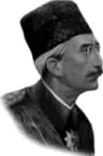

SULTAN VAHDETTİN
Annesi : Gülistü Kadın Efendi
Doğumu : 2 Şubat 1861
Vefatı : 15 Mayıs 1926
Saltanatı : 1918 - 1922 (4 yıl)
Mehmet Vahdettin de İstanbul’da doğmuştur. Orta boylu, zayıf fakat kuvvetli bir vücudu vardı. Kıymetli ulema tarafından iyi bir tahsil yaptırıldı. Tahta çıktığında Osmanlı Devleti en kötü günlerini yaşıyordu. I. Dünya Savaşı’nda kendi cephelerimizde galip gelmemize rağmen yenik çıkmıştık.
En ağır şartları ihtiva eden Mondros ve Sevr antlaşmaları yapıldı. Devletin tamamen elden çıktığını gören padişahın yüksek seviyede bir gizli toplantı yaparak zamanının kabiliyetli subaylarına, Anadolu’ya geçip milleti istilacılara karşı ayaklandırıp teslim olmamalarını tavsiye ettiği söylenir. Anadolu’da Milli Mücadele başladı. Milli Meclis teşekkül etti. Yeni meclis padişahlığı kaldırarak, Cumhuriyet idaresini kabul etti. Zaten İstanbul işgal altında idi. Padişahın elinde ne bir kuvvet ve ne de bir selâhiyet vardı. Padişahlığın kaldırılması ve Osmanlı hanedanına yapılan tenkitlerin son hadde varmasıyla İstanbul’dan, dolayısıyla Türkiye’den ayrıldı. 641 yıllık Osmanlı hanedanının son üyesi, son padişahı ve Müslümanların yüzüncü halifesinin bu ayrılışında yıl 1922 idi. Avrupa’nın birçok yerlerine uğradı. Pek çok yerden oturma teklifi aldı. Fakat hiç kimsenin gizli gayesine alet olmadı. Nihayet İtalya’nın San Remo şehrinde oturmaya karar verdi. Vefatına kadar orada kaldı. Hayatı maddi sıkıntılar içinde geçti.
15 Mayıs 1926 tarihinde vefat etti. Cenazesi Türkiye’den istenmediği için Türkiye’ye getirilemedi. Borçları bulunduğundan tabutuna haciz kondu. Suriye Devlet Başkanı cenazeye sahip çıktı ve tabutu Suriye’ye getirtti. Şam’da Sultan Selim Camii avlusuna defnedildi. Vefatında altmış beş yaşında idi. Defnedildiği mezarlık 1965 yılında park haline getirildi. Şimdi mezarının da kesin olarak nerede olduğu belli değildir.
Erkek çocukları: Mehmet Ertuğrul.
Kız çocukları: Rukiye, Sabiha, Fatma Ulviye.